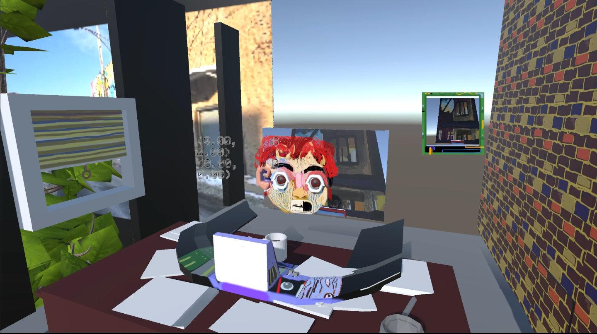

Each prototype in this section introduces its own
structure between a player and how their input is read.
Prototype 1:Apartment with the Eyes
In this demo player input is sent to the motion of the eyes, which are physically simulated balls rolling around in a cartoon drawing of my own face.
This prototype is similar to the shoe camera in 'Go That Way' and the ik-arm set up in 'In An Uan',
in that it selectively directs the players input towards detailed body motions in tandem with intentional cameras, creating organized but subjective frames of playing.

It might be helpful to highlight a few elements in this scene before showing you a clip: in the very center of the screen is a character - you will see their eyes moving,
as directed by the player. To the right of the screen is a square box that shows the view of these eyes as they consider the desk and the things around it.
Behind the player is a window, with a tree outside. A train
passes in the background. Text scrolls over the top of the screen.The text is a bit sloppy and heavy handed in retrospect. I should have moved this to its own corner.
I'm interested in trying to figure out how to move the player across points of view, to make connections
that expand on the performance possible within the story-telling of a game-world.
In the next prototype I'm also trying to use
sound, writing, and interaction design to build on that quality of 'presence'.
a Point and Click Cursor in 3rd Person Space
The character in this scene is made of 2D sprites hidden and shown accordingly to the view. This character stands out in juxstaposition with the 3d pointer, which can be moved around the sceneThings respond to the click of this pointer, offering related text that runs along the bottom of the screen.The sound in this demo also enters and exists reverb zones as the view position changes. This camera is moved by the player.
All together, these elements try to quickly show how a more polished, but similar player design might show a new kind of interactivity between the 'game' real and the players 'inter-textual' real.
The cursor is a great example of an 'inter-textual' object, dividing and unifying the world between the player and the game at the same time. How can it be further developed, messed with, or turned to play?
"Laymans VR"
This last one is a technical one.
The basic conceit of 'laymans vr' is that you have two input axis controlling the movement of the left and right hand respectively (and they aren't vr controllers. This demo is aimed at
flat screens with controllers like mouse and keys or game pads)
From the focal point of the dual hand movement, the positioing of the whole body happens in two ways: there is a dedicated move forward and move backward button. There is also a bounding range around the hands.
Once the hands move beyond ths range the player will start to translate in the direction which the hands are 'pushing'.
Essentially the combined input of the hand axis move the player, while there remains a closed in interior space near to the player, where their hands can move freely in relation to the body.
When it came to turning around, like turning left or right, I found that the solution which was most suggestive of interesting game play was to give the player a dedicated 'turn' button. Once
this button is pressed, in-game-time fully pauses and the player can choose 90 degree rotations to re-orient themselves. When the turn button is pressed again, in game time resumes.
If all this sounds abstract for a player controller, thats because to some degree it is. This demo developed out of exploratory play tests, and because it evolved out of play, the input is confusing at first try
but actually, suprisingly enjoyable and graspable once you are told how it works and get enough practice.
I think it would make
for an especially interesting rouge-like game. How could we combine first-person and turn based strategy game designs to create something new?
Thats it. I saved my most useless, unplayable controller for last, like all good portfolio-ists should do. All I have left for you is a conclusion. Its called 'Loop ' If you've made it
this far, I genuinely appreciate your time.